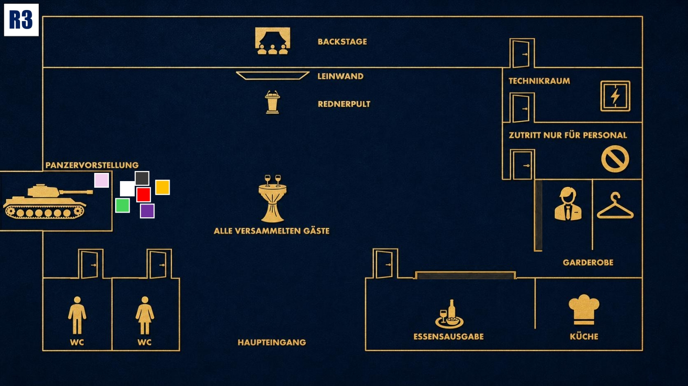

Konfrontation
Der Moment der Wahrheit. Geheimnisse kommen ans Licht. Nutze alles, was du weißt.

Das Ziel der dritten Runde
Finde heraus, ob Jake ein Opfer oder ein Täter ist. Entscheide nach der Wahrheit über seine Vergangenheit, ob du weiter an seiner Seite stehst oder dich gegen ihn stellst.
Deine Ausgangslage
Durch Michaels Versprecher wird dir klar, dass Jakes neues Leben möglicherweise geplant wurde. Sein Job, sein Umfeld und vielleicht sogar seine Therapie könnten Teil eines größeren Systems sein. Deshalb musst du Enisa genau beobachten und herausfinden, ob sie Jake geschützt oder bewusst in eine bestimmte Richtung gelenkt hat.
Deine Geheimnisse
1. Die Erkenntnis der Manipulation: Durch Michaels Versprecher über die 110. Einheit wird dir klar, dass Jakes neues Leben konstruiert wurde. Er ist vielleicht kein Täter, sondern eine Schachfigur.
2. Das Muster: Michael weiß Dinge über Jakes Therapie, die er unmöglich wissen dürfte. Entweder wurde Enisa erpresst oder sie hat Jake bewusst verraten.
Deine Mission
1. Enisa in die Enge treiben: Stelle Enisa gezielte Fragen zu Jake und seiner Therapie. Finde heraus, ob sie ihn geschützt, beeinflusst oder Informationen über ihn an andere weitergegeben hat.
2. Die Entscheidung treffen: Wenn du die Wahrheit über Jakes Vergangenheit im Jahr 1996 erfährst, entscheide, ob du weiter an seiner Seite bleibst oder ihn auslieferst.
Deine Erinnerung an 19.40 Uhr

Zum Vergrößern tippen
Du stehst mit Jake in der ersten Reihe vor dem Panzer. Plötzlich wird es dunkel und jemand huscht hinter dir vorbei. Als das Licht zurückkehrt, liegt Cole Silverman tot am Boden. Nur Diego und Eric sind nicht bei den anderen.
Mögliche Fragen
An Jake: „Ich gebe dir genau eine Chance: Was ist 1996 in Kolumbien passiert und wer ist Miguel Silva?“
An Enisa: „Du kennst Jake seit Jahren. Hat dich jemals jemand gebeten, ihn in eine bestimmte Richtung zu lenken?“